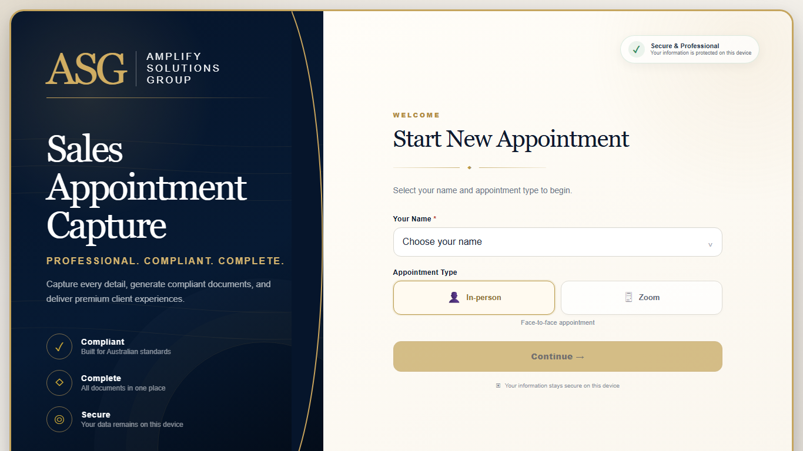
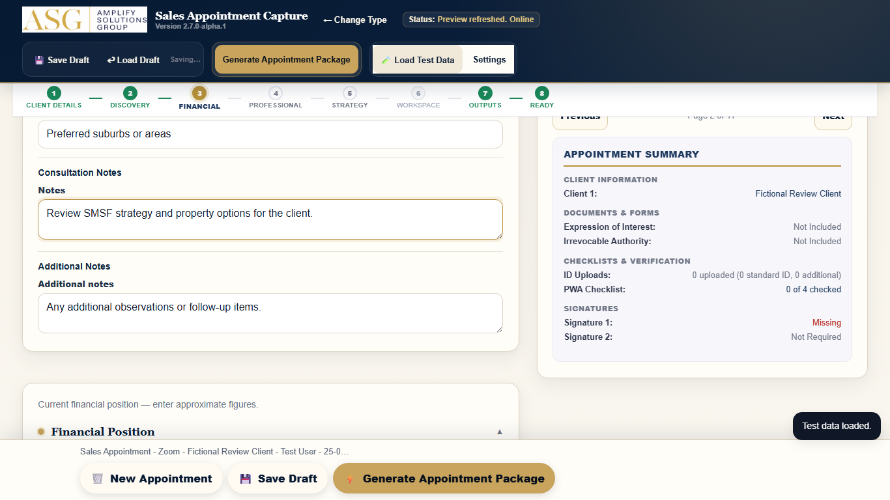

Sales Appointment Capture Field Guide
A practical guide for preparing, completing and handing over client appointments
Internal Staff Resource
Guide version: 1.1.0 DRAFT FOR REVIEW
Application version: 2.7.0-alpha.1
Issue date: 24 July 2026
Contents
- About This Guide
- Quick Start
- Before You Leave
- Installing the App
- Preparing to Work Without Internet
- Working Without an Internet Connection
- When Your Internet Connection Returns
- Choosing the Appointment Type
- Starting an Appointment
- In-Person Appointments
- Entering Sale Details
- Zoom Appointments
- Using the Zoom Whiteboard
- Adding Identification and Supporting Documents
- Collecting Signatures
- Saving Your Appointment
- Opening a Saved Appointment
- Creating the Final Documents
- Downloading and Emailing the Documents
- Checking the Final Documents
- Common Mistakes
- Troubleshooting
- Best Practices and Device Tips
- One-Page Quick Reference
- Final Appointment Checklist
About This Guide
This guide helps you prepare for, complete and hand over client appointments using the Sales Appointment Capture app.
It covers:
- Setting up the app on your device
- Working without an internet connection
- Completing in-person and Zoom appointments
- Creating and sending the final documents
IMPORTANT This guide is for ASG staff only. Do not share it outside the organisation.
WARNING Use only an approved ASG work device. Do not use a personal phone, tablet or computer.
Quick Start
- Open the installed app on your device.
- Choose your name from the staff list.
- Select the appointment type: In-Person or Zoom.
- Fill in the client details and appointment information.
- Save your appointment regularly.
- Create the final documents when the appointment is complete.
- Download the Combined PDF and Document ZIP.
- Check both files carefully.
- Prepare the email and attach both files.
- Send the email when you have a stable internet connection.
Before You Leave
REQUIRED Complete this checklist before leaving for an appointment.
- [ ] Device fully charged
- [ ] Charger packed
- [ ] Mobile hotspot available
- [ ] App installed
- [ ] App opens correctly
- [ ] Latest version loaded
- [ ] Test appointment saved
- [ ] Test appointment reopened
- [ ] Working without internet tested
- [ ] Camera permission available
- [ ] Signatures working
- [ ] Whiteboard working
- [ ] Enough device space available
- [ ] Required client documents ready
- [ ] Appointment location confirmed
TIP Estimated check time: about 2 minutes. Do this the day before or morning of the appointment.
Installing the App
Windows (Chrome)
- Open Google Chrome and go to the app address provided by your manager.
- Look for the install icon in the address bar (a computer screen with a down arrow).
- If you do not see the icon, open the Chrome menu (three dots), go to Cast, save and share, then choose Install page as app.
- Follow the on-screen steps to install.
- After installation, open the app from its own window (not from Chrome).
- Pin the app to your taskbar or Start menu if you prefer.
EXPECTED RESULT The app opens in its own window with the ASG logo visible.
Android (Chrome)
- Open Chrome and go to the app address provided by your manager.
- Tap the menu (three dots).
- Tap Add to home screen.
- Tap Install if the option appears.
- The app icon will appear on your home screen.
EXPECTED RESULT Tapping the app icon opens the app without the Chrome address bar.
iPhone and iPad (Safari)
- Open Safari and go to the app address provided by your manager.
- Tap the Share button (square with up arrow).
- Scroll down and tap Add to Home Screen.
- If available, turn on Open as Web App.
- Tap Add.
EXPECTED RESULT Tapping the app icon opens the app in its own screen.
Preparing to Work Without Internet
WARNING You must test this before you travel. Do not rely on untested preparation.
- Connect to reliable internet.
- Open the installed app.
- Wait for the status to show Online.
- Save a test appointment by entering a test name and tapping Save Appointment.
- Close the app completely.
- Turn off Wi-Fi and mobile data, or turn on airplane mode.
- Reopen the app.
- Check that the status shows Working without internet.
- Open your test saved appointment.
- Confirm that it loads correctly.
- Reconnect to the internet.
- Delete the test appointment.
EXPECTED RESULT The app opens, shows the correct status and your test appointment loads while disconnected.
WARNING Offline availability must be tested on the actual device before travelling to an appointment area with poor reception.
Working Without an Internet Connection
When your device does not have an internet connection:
- Open the prepared app on the same device you tested.
- Your saved appointments will be available.
- Complete the appointment as normal.
- Save regularly. Tap Save Appointment after each important section.
IMPORTANT The status bar will show Working without internet. Save your appointment often.
- Do not clear your browser data.
- Do not change device profiles or users.
- Do not uninstall the app.
- Only have one appointment open at a time.
WARNING If saving fails, do not close the app. The message will tell you what to do. Your appointment data is still visible on screen.
EXPECTED RESULT You can complete the entire appointment, capture signatures and photos, use the whiteboard and save while disconnected.
When Your Internet Connection Returns
- Your device will show Online when the connection returns.
- Your saved appointment is still available. No data is lost.
- Check all client details and appointment information.
- Complete any remaining steps if needed.
- Create the final documents.
- Download and email them as normal.
EXPECTED RESULT Your saved appointment remains exactly as you left it. You can now create and send the final documents.
Choosing the Appointment Type
The app supports two appointment types:
|
In-Person |
Zoom |
| Client is present |
Yes |
No |
| Whiteboard available |
No |
Yes |
| Photo ID capture |
Yes |
Yes |
| Signatures |
Yes |
Yes |
Choose the type that matches your appointment.
IMPORTANT You cannot change the appointment type after starting. If you need to change, return to the start screen and begin again.
Starting an Appointment
- Select your name from the staff list on the start screen.
- Choose In-Person or Zoom.
- Tap Continue.
If a saved appointment exists, you will see three choices:
- Continue Current Appointment — resume working on your saved appointment.
- Start New and Keep Saved Appointment — begin a new appointment while keeping your saved one.
- Delete Saved Appointment and Start New — remove the saved appointment and start fresh.
WARNING Deleting a saved appointment cannot be undone.
In-Person Appointments

Complete each section in order:
- Client details: name, email, phone and address.
- Sale details: property address, price and contract due date.
- EOI (Expression of Interest) details if needed.
- IA (Irrevocable Authority) details if needed.
- Supporting documents and identification.
- Client signatures.
- Save after each section.
Entering Sale Details
- Enter the property sale address.
- Enter the sale price.
- Set the contract due date or check Contract Due Date TBC.
The sale details appear in the final documents.
Zoom Appointments
Zoom appointments include everything in an in-person appointment, plus:
- Zoom notes section for consultation notes.
- Builder and developer selection.
- Timeline for the client.
Using the Zoom Whiteboard

The whiteboard helps you draw and explain concepts during Zoom consultations.
- Use the pen tool to draw on the whiteboard.
- Tap Save Page to keep the current drawing.
- Saved pages appear as thumbnails below the whiteboard.
- Tap a thumbnail to view a saved page.
IMPORTANT Save a page before clearing the whiteboard. Unsaved drawings are lost.
Adding Identification and Supporting Documents
- Tap the photo area to add a photo or scanned document.
- Choose from camera, photo library or file picker.
- The image is added to the appointment.
WARNING Photos and documents are saved on this device only. They are not sent anywhere until you email the final documents.
Collecting Signatures
- Ask the client to sign in the signature area using their finger or a stylus.
- Tap Clear to remove the signature and try again.
- The signature is saved with the appointment.
EXPECTED RESULT The signature appears clearly on the final documents.
Saving Your Appointment
REQUIRED Save your appointment regularly.
- Tap Save Appointment after completing each section.
- The status will show Appointment saved when successful.
When saving:
- Your appointment is saved on this device only.
- Saved appointments expire after 7 days.
- Saving again restarts the 7-day period.
If saving fails:
- A message will explain the problem.
- Your previous saved version is kept.
- Do not close the app until you have saved successfully.
WARNING Saved appointments are on this device only. They do not sync to other devices or the cloud. Clearing browser data, uninstalling the app or changing device profiles will remove them.
Opening a Saved Appointment
- On the start screen, tap Open Saved Appointment if one exists.
- Check that all fields have loaded correctly.
- The expiry date is shown so you know when the appointment will be removed.
If a saved appointment has expired (older than 7 days), it is automatically removed.
If a saved appointment cannot be opened, you will see: This saved appointment cannot be opened. You can choose to keep it and contact support, or delete it and start new.
Creating the Final Documents
REQUIRED You must be connected to the internet to create the final documents for the first time. If you are working without internet, your saved appointment is safe. Connect and try again.
- Check that all appointment details are correct.
- Tap Create Final Documents.
- Wait for the process to complete.
- When finished, the download buttons will appear.
If a document is not available: This document is not available on the device yet. Connect to the internet, reopen the app and try again.
EXPECTED RESULT Two files are ready for download: Combined PDF and Document ZIP.
Downloading and Emailing the Documents
- Tap Combined PDF to download the merged document.
- Tap Document ZIP to download all individual documents.
- Check that both files have downloaded.
- Tap Prepare Email.
- Your email program will open with the recipient and subject already filled in.
- Attach the Combined PDF file.
- Attach the Document ZIP file.
- Confirm the recipient email address is correct.
- Send when you have a stable internet connection.
REQUIRED You must attach both files manually. The app does not attach files automatically.
WARNING If your internet connection is not stable: Connect to the internet before preparing or sending the email.
Checking the Final Documents
Before sending, open and check:
- Client name is correct.
- Property address is correct.
- Sale price and details are correct.
- EOI and IA details (if included) are correct.
- Signatures are visible.
- All pages are present and readable.
IMPORTANT If anything is wrong, correct it in the app, save and create the documents again.
Common Mistakes
- Multiple tabs open — only use one tab or window for the app. Multiple tabs can cause data loss.
- Not saving regularly — save after every section. Do not rely on the app saving automatically.
- Forgetting to attach files — the email is prepared but files are not attached automatically. Attach them yourself.
- Using old documents — always create fresh documents before sending. Do not reuse old downloads.
- Clearing browser data — this removes saved appointments. Only do this when told to by your manager.
- Switching devices — saved appointments are on one device only. They do not transfer.
- Refreshing without saving — refresh or close loses unsaved changes. Always save first.
- Not testing offline — test working without internet before you need it.
- Untested camera and signatures — test these before the appointment.
- Sending without checking — always open and check both files before emailing.
Troubleshooting
The app will not open
- Check you are using the installed app, not a browser tab.
- Connect to the internet and open the app. If this is the first time, you must be online.
Appointment not saved
- Close other apps to free up device space.
- Save again. If the problem continues, make a note of the client details and contact support.
Cannot create final documents
- Connect to the internet.
- Close and reopen the app.
- Try creating the documents again.
Saved appointment has expired
- Saved appointments are kept for 7 days. If more than 7 days have passed, the appointment has been removed. Create a new appointment.
Signature or photo not showing
- Save your appointment, close the app completely and reopen it.
- If the problem continues, re-add the signature or photo and save again.
Email will not open
- Make sure you have an email program installed on your device.
- Your device must be connected to the internet to send email.
Best Practices and Device Tips
- Charge your device fully before appointments.
- Bring a charger and mobile hotspot.
- Test working without internet before you travel.
- Save after every section.
- Use only one device for each appointment.
- Complete the handover promptly after the appointment.
- After the handover is complete, use Complete Handover and Clear Draft to remove the appointment from the app.
- This clears the appointment and uploaded documents from the app but does not delete files already downloaded to your device.
- Close the app when you are finished.
One-Page Quick Reference
| Step |
Action |
| Before leaving |
Complete the Before You Leave checklist |
| Start |
Choose staff, type, tap Continue |
| Client details |
Enter all required fields |
| Save |
Save after every section |
| Signatures |
Client signs, save again |
| Create documents |
Tap Create Final Documents (need internet) |
| Download |
Combined PDF and Document ZIP |
| Check |
Open both files, check everything |
| Email |
Prepare email, attach both files, send |
| Clear |
Complete Handover and Clear Draft |
Final Appointment Checklist
Before sending the final documents, confirm:
- [ ] Client name is correct
- [ ] Contact details are correct
- [ ] Property address is correct
- [ ] Sale price is correct
- [ ] Contract due date is set or TBC
- [ ] EOI details are complete (if included)
- [ ] IA details are complete (if included)
- [ ] Client signatures are present
- [ ] Supporting documents are attached
- [ ] Whiteboard pages are saved (Zoom only)
- [ ] Combined PDF downloaded and checked
- [ ] Document ZIP downloaded and checked
- [ ] Email recipient is correct
- [ ] Both files attached to email
- [ ] Appointment cleared from app after handover
End of Field Guide
Sales Appointment Capture Field Guide v1.1.0 DRAFT FOR REVIEW
Internal use only — Amplify Solutions Group
Sales Appointment Capture Field Guide v1.1.0 DRAFT FOR REVIEW — Internal use only